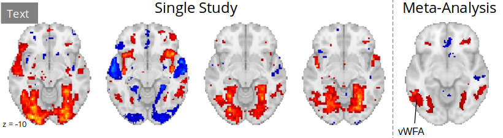

Big news from the Neuroscout team!
Contents
Big news from the Neuroscout team!#
We’re excited to share that our paper: “Neuroscout, a unified platform for generalizable and reproducible fMRI research” is available in eLife. We break down Neuroscout’s approach and validate it across 35 distinct naturalistic experiments.
Here are some of the highlights, along with some new features you might have missed since you last visited.
We also are happy to announce a major re-launch of the Neuroscout Documentation. It’s now easier to learn how to use Neuroscout.
Finally, you can now launch Neuroscout analyses in the cloud for free using Google Collab. Learn more in the new docs!
Hundreds of automatically extracted features#

Neuroscout makes it it easy to analyze naturalistic fMRI datasets.
We use state-of-the-art machine-learning models to annotate public datasets and provide hundreds of pre-extracted multi-modal predictors.
You can browse all predictors here: https://neuroscout.org/predictors
Diverse naturalistic datasets 🎉#
We have added many more datasets to Neuroscout, and now include 40 distinct naturalistic tasks, across 14 public datasets.
Two exciting datasets we’ve added are the “Naturalistic Neuroimaging Database” (NNDb), and “Narratives”. Between these two datasets, we’ve added 18 naturalistic tasks!
Big shout out to all of the original authors that shared their data publicly 👏
You can browse all datasets here: https://neuroscout.org/datasets
Easy-to-use, fully automated workflow 🤖#
Neuroscout provides an easy-to-use analysis builder and fully automated execution, making it a breeze to estimate reproducible GLM models.
All you have to do is choose datasets and predictors, and run one command. Results are automatically uploaded to NeuroVault! 🚀

Under the hood, Neuroscout uses FitLins and the BIDS Stats Model specification to ensure maximum reproducibility and transparency of all our models.
We’re working to release V1 of the BIDS Stats Model specification, so stay tuned!
Scalable workflows increase generalizability 👈#
Automated workflows not only increase reproducibility and save you time, but they can also enable novel meta-workflows for more generalizable research

Using Clarifai’s general recognition model to detect “buildings” across 20 distinct naturalistic experiments, we found strong consensus of PPA activity.
However, single datasets were sometimes highly variable.
Using Clarifai to tag videos for “text” present on the screen, we found consensus for activity in the visual world form area (VWFA) in the meta-analysis (n=20), but single dataset results were much more variable.

Iteratively refine models 🔁#
Naturalistic fMRI is hard but Neuroscout helps overcome some common challenges.

For example, we tagged video frames for faces, and didn’t find FFA 🤯
Drawing upon Neuroscout’s vast range of predictors, we refined models to control for covariates, and results looked more familiar. First, we controlled for “speech” and found the expected FFA activation. Next, we controlled for adaptation to specific faces, and observed a stronger relationship.
Try it yourself! ✅#
Neuroscout is ready for you to give it a shot and apply it to your research.
Get in touch!#
We’re also here to help, please don’t hesitate to contact Alejandro (@elneurozorro) if you have a question. You can also ask question to the Neuroscout team and the community on NeuroStars. If you have a bug report, feature request or would like to contribute, file an issue on GitHub!